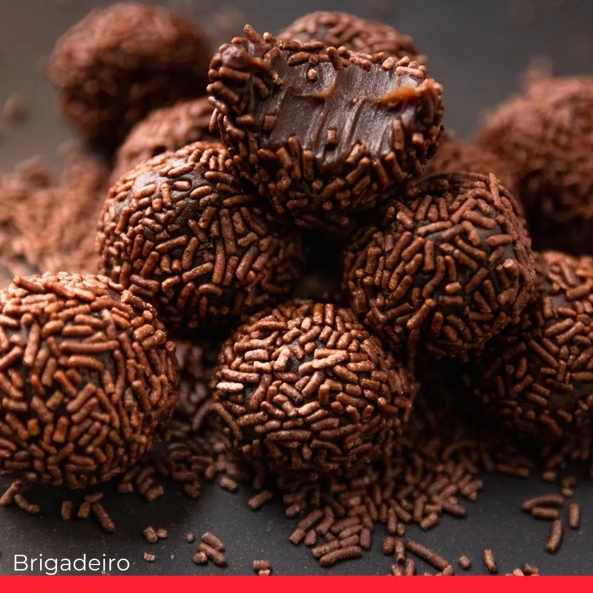

Brigaderio

The tastiest and easiest brazilian sweet
Whenever someone tries the brigadeiro and I tell them how I made it, they're always so suprised by it! It really couldn't get any easier, and I'll show you how to make it!
Ingredients needed:
- 140z of Sweentened condensed milk
- 1 tablespoon of butter
- 1/4 cup of cocoa powder
- 1 Cup of choclate sprinkles
How to make it:
- in a pot over low heat pour these ingredients in this order
- Butter
- When butter is melted, add the cocoa powder
- Once they are both well mixed, add the condensed milk
- Stir softely and continuously until it has a good consistency (generally you can tell by once you stir, it doesn't leave any residue where you just stirred)
- Pour it to a greased (with butter) plate and let it cool in the fridge for about an hour
- Now, after greasing your own hands, take small portions and roll them into little balls
- Roll the now formed brigadeiro onto the sprinkles
- Bon Apetit!
click Homepage to go to the Homepage